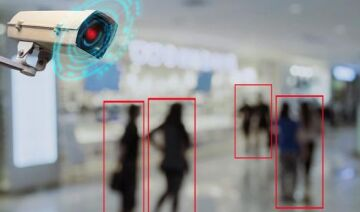

Экономика и бизнес:
- Прогнозирование временных рядов (курсов валют, цен на сырьё, спроса, объемов продаж,..)
- Автоматический трейдинг (торговля на валютной, фондовой или товарной бирже)
- Оценка рисков невозврата кредитов, предсказание банкротств
- Оценка стоимости недвижимости, выявление переоцененных и недооцененных компаний, рейтингование
- Оптимизация товарных и денежных потоков, считывание и распознавание чеков и документов
- Безопасность транзакций по пластиковым картам
Медицина и здравоохранение:
- Постановка диагноза больному (диагностика заболеваний)
- Обработка медицинских изображений
- Очистка показаний приборов от шумов
- Мониторинг состояния пациента
- Прогнозирование результатов применения разных методов лечения
- Анализ эффективности проведённого лечения
Авионика:
- Обучаемые автопилоты
- Распознавание сигналов радаров
- Адаптивное пилотирование сильно поврежденного самолета
- Беспилотные летательные аппараты (дроны)
Связь:
- Сжатие видеоинформации
- Быстрое кодирование-декодирование
- Оптимизация сотовых сетей и схем маршрутизации пакетов
Интернет:
- Ассоциативный поиск информации
- Электронные секретари и автономные агенты в интернете
- Фильтрация и блокировка спама
- Автоматическая рубрикация сообщений из новостевых лент
- Адресные реклама и маркетинг для электронной торговли
- Распознавание captcha
Автоматизация производства:
- Оптимизация режимов производственного процесса
- Контроль качества продукции
- Мониторинг и визуализация многомерной диспетчерской информации
- Предупреждение аварийных ситуаций
Робототехника:
- Распознавание сцены, объектов и препятствий перед роботом
- Прокладка маршрута движения
- Управление манипуляторами
- Поддержание равновесия
Политологические и социологические исследования:
- Предсказание результатов выборов
- Анализ опросов
- Предсказание динамики рейтингов,
- Выявление значимых факторов
- Кластеризация электората
- Изучение и визуализация социальной динамики населения
Безопасность, охранные системы:
- Распознавание лиц
- Идентификация личности по отпечаткам пальцев, голосу, подписи или лицу
- Распознавание автомобильных номеров
- Мониторинг пакетов информации и информационных потоков в компьютерной сети для обнаружения вторжений
- Обнаружение подделок
- Анализ данных с видеокамер и разнообразных сенсоров
- Анализ аэрокосмических снимков (например, для обнаружения лесных пожаров или незаконных вырубок леса)
Ввод и обработка информации:
- Распознавание рукописных текстов, отсканированных почтовых,
платежных, финансовых и бухгалтерских документов
- Распознавание речевых команд
- Речевой ввод текста в компьютер
Геологоразведка:
- Анализ сейсмических данных
- Ассоциативные методики поиска полезных ископаемых
- Оценка ресурсов месторождений
Компьютерные и настольные игры:
- Создание нейроигроков в шашки и шахматы (подтверждённые игрой с
людьми рейтинги - на уровне мастеров и международных мастеров)
- Выигрыш в Го у чемпионов Европы и мира
- В среднем лучшее, чем у человека, прохождение почти полусотни
старых классических игр с Атари (всякие там Понги, Пакманы,..)

